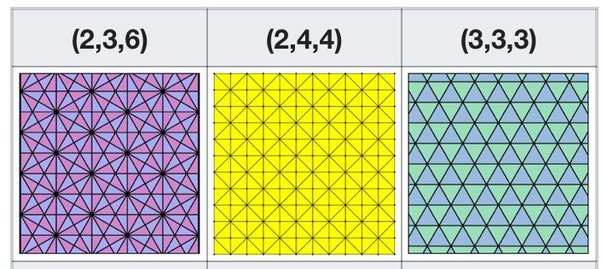
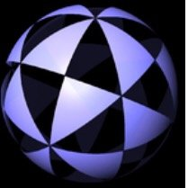
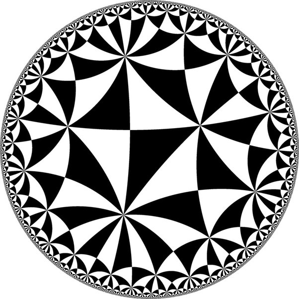

Given , what are the values of ,, and if they are integers?
This is a surprisingly useful little question.
In geometry and group theory (triangle groups), there is interest in classifying triplets of numbers a,b,c by comparing \frac{1}{a}+\frac{1}{b}+\frac{1}{c} with 1. A triangle with angles (\pi/a,\pi/b,\pi/c) can be realized in spheric, Euclidean or hyperbolic geometry depending on whether that sum is more than, equal to or less than 1. If a,b,c are whole numbers, we may be able to piece these triangles together to form a tiling.
Therefore, the Euclidean case corresponds to
\displaystyle \frac{1}{a}+\frac{1}{b}+\frac{1}{c}=1
and it’s useful to find out which sets of positive integers a,b,c satisfy this equation.
(Note: everything here is about solutions in positive integers. Allowing negative ones introduces just one more family of solutions, (1,-n,n), but that’s it. Prove it!)
Any solution can clearly be permuted arbitrarily (swapping the values of a,b,c around), so we might as well assume that a\le b\le c. Now, let’s see:
a=1 is clearly out of the question.
a=2 implies \frac{1}{b}+\frac{1}{c}=\frac{1}{2}. This can be rearranged to c=\frac{2b}{b-2} which has to be at least b; rearranging the inequality yields b\le 4. Finally, b=2 is impossible, b=3 works with c=6 and b=4 works with c=4.
a=3 implies that b,c\ge 3 so \frac{1}{b}+\frac{1}{c}\le \frac{2}{3}. But they have to add up to \frac{2}{3}, so the only option is b=c=3.
And of course, a\ge 4 is impossible since then \frac{1}{a}+\frac{1}{b}+\frac{1}{c}\le \frac{3}{4}.
So, in summary, there are exactly three solutions (up to rearranging the variable names):
- a,b,c = 3,3,3
- a,b,c = 2,4,4
- a,b,c = 2,3,6
Geometrically, these correspond to an equilateral triangle, an isosceles right triangle, and the triangle with angles (\pi/2,\pi/3,\pi/6)=(90^\circ,60^\circ,30^\circ). These triangles correspond to three tilings of the plane:

(source: Wikipedia, loc. cit.)
The spherical case admits five solutions plus one infinite family (2,2,n), while the hyperbolic case takes all the rest. It is typical that, of the three geometries, it’s the hyperbolic one that’s the most rich and flexible.
For example, (2,3,4) belongs to the spherical case since \frac{1}{2}+\frac{1}{3}+\frac{1}{4}>1, which yields this spherical tiling using a triangle with (spherical) angles (90^\circ, 60^\circ, 45^\circ):

The hyperbolic case, meanwhile, admits tilings such as this (2,5,7) one, shown here with the Poincaré disk model.

The hyperbolic plane is the best plane.